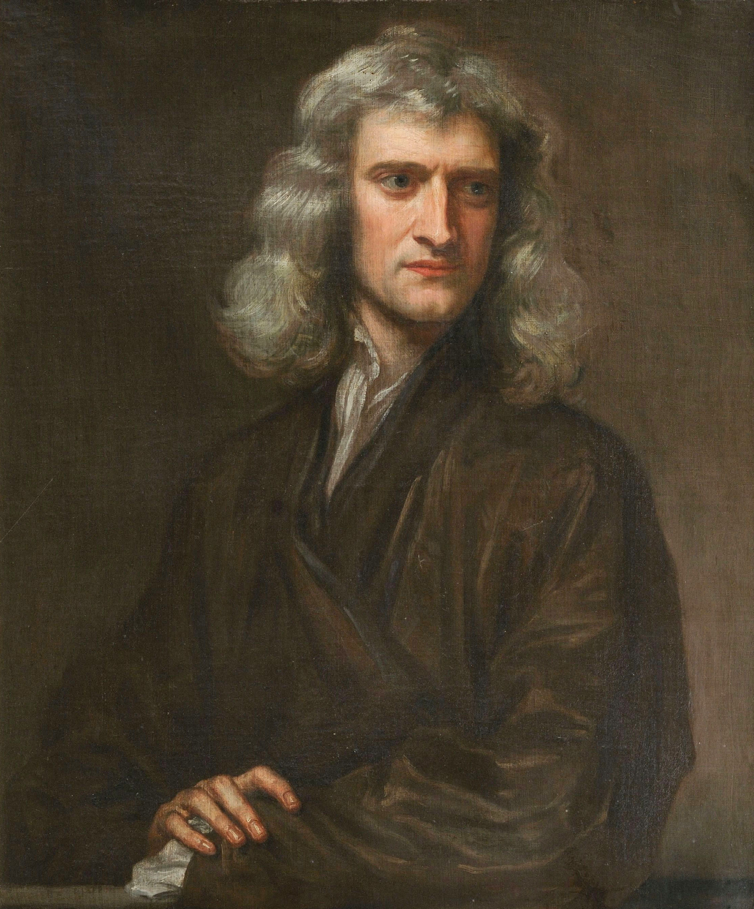
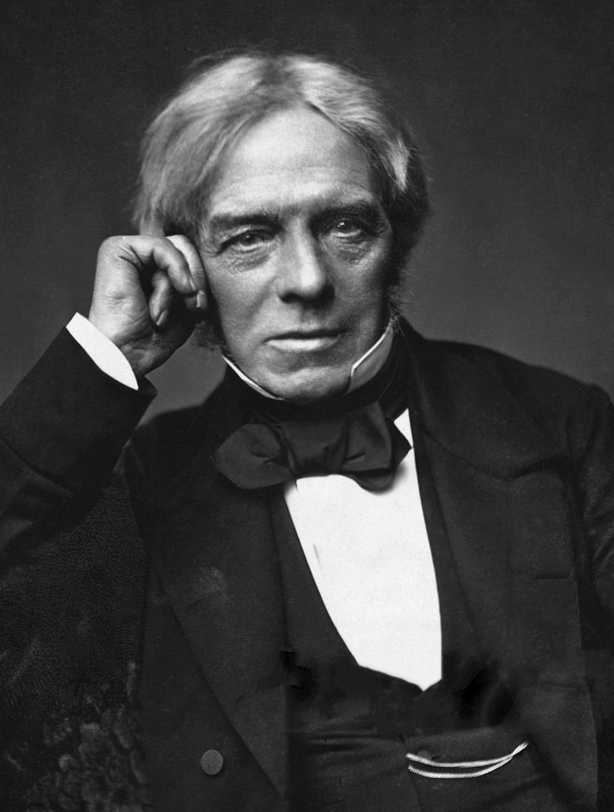
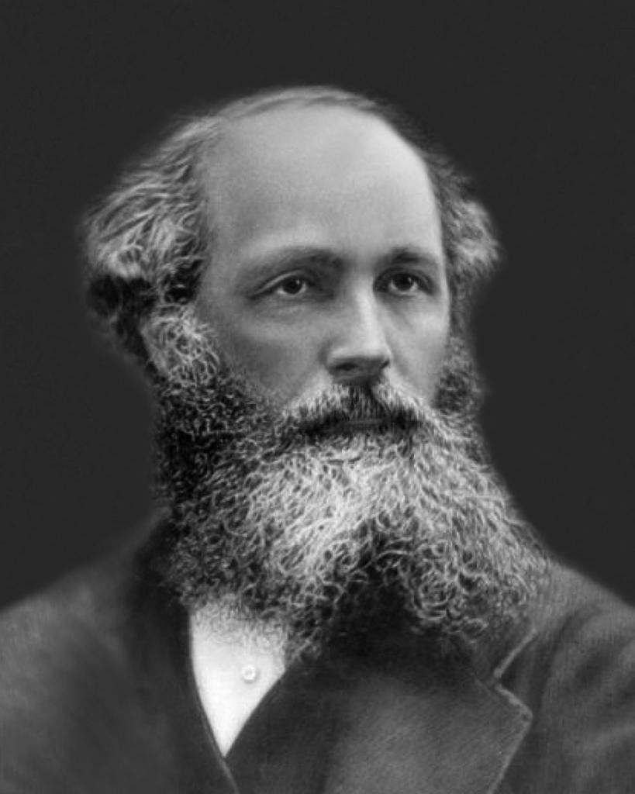
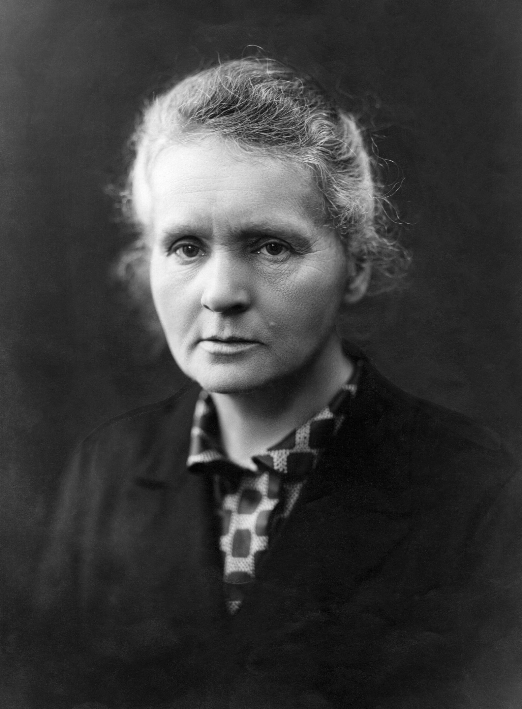
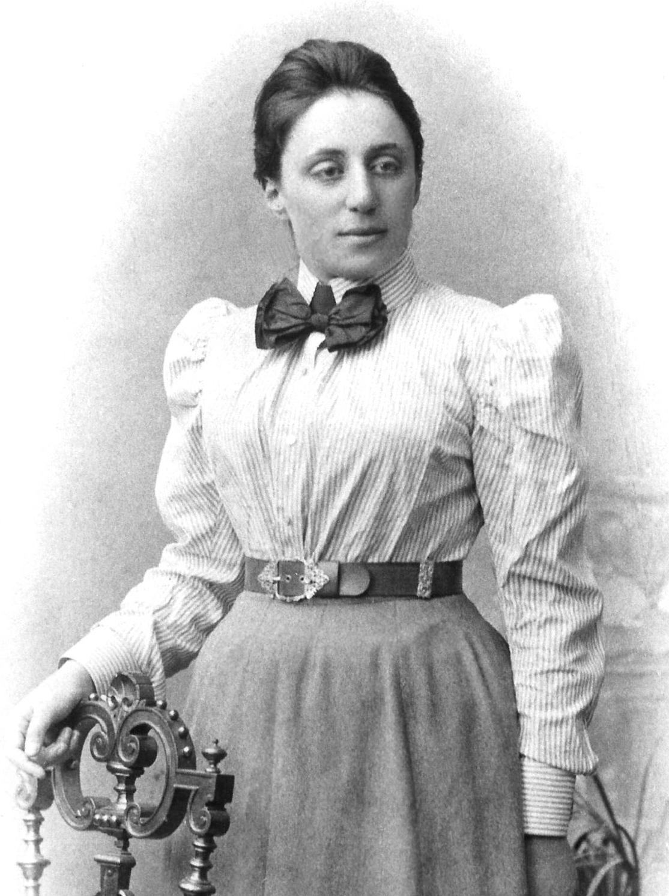

Isaac Newton
1643–1727
Motion & gravity
Formulated three laws of motion and the law of universal
gravitation, connecting everyday motion with the motion of
planets.

Michael Faraday
1791–1867
Electromagnetic induction
Discovered that a changing magnetic field can induce an electric
current—the principle behind electric generators.

James Clerk Maxwell
1831–1879
Electricity, magnetism & light
United electricity and magnetism in a mathematical theory and
showed that light is an electromagnetic wave.

Marie Curie
1867–1934
Radioactivity
Pioneered research into radioactivity and, with Pierre Curie,
discovered polonium and radium. She received Nobel Prizes in both
physics and chemistry.

Albert Einstein
1879–1955
Relativity & quantum physics
Developed special and general relativity. His explanation of the
photoelectric effect helped establish the quantum nature of light.

Emmy Noether
1882–1935
Symmetry & conservation
Showed how continuous symmetries of a physical system lead to
conservation laws. Time-translation symmetry, for example, is
linked to conservation of energy.